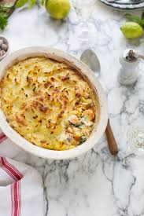

Fish Pie

Description
A real crowd-pleaser! Swap in any fish you like in this versatile, comforting pie.
Serves 4
1 hour 10 minutes to cook
Ingredients
- 1 kg potatoes
- 1 carrot
- 2 sticks celery
- 150g cheddar cheese
- 1 lemon
- 1/2 fresh red chilli
- 4 sprigs of fresh flat-leaf parsley
- 300g salmon fillets
- 300g unsmoked haddock, cod or white fish
- 125 g king prawns, optional
- olive oil
- 1 good handful baby spinach
- 2 ripe tomatoes, optional
Recipe
- Preheat oven to 200C/400F/gas 6
- Peel the potatoes and cut into 2cm chunks, then cook in boiling salted water for 12 minutes, or until tender
- Peel and grate the carrot into a deep baking dish, then coarsely grate the celery and cheddar
- Finely grate the lemon zest and chilli. Add to the dish with the parsely
- Slice the fish into bite-size chuncks and add to the tray with the prawns, if using
- Squeeze over the lemon juice - no pips! - drizzle lightly with oil and add a good pinch of salt and pepper
- Add spinach and tomatoes if using then mix everything really well
- Drain the potatoes and return them to the pan. Mash with a couple of glugs of olive oil. Season
- Spread the mash over the fish pie mix and bake in the oven fpr 40 minutes until cooked through and golden on top
- Serve with steamed green veg or salad and ketchup for the kids